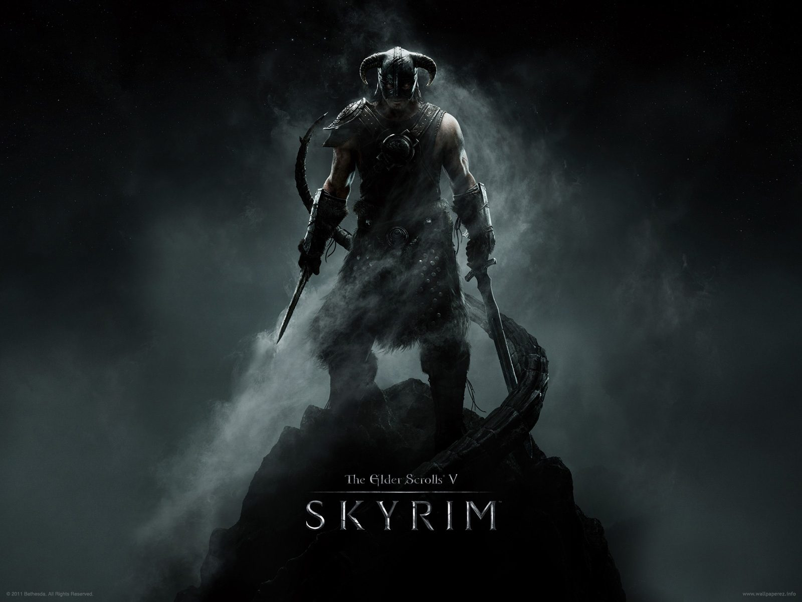
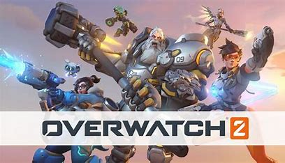

My top 3 favorite video games
Hello, my name is Sa'Cairo Bonner. I am studying in Information Technology and Networking with a concentration on programming.
This webpage is a showcase of my top 3 most favorite games of all time from most favorite to least favorite.
My top game of all time: Skyrim

My favorite video game of all time is The Elder Scrolls V: Skyrim. I grew up playing this game since the game's launch day on November 11 2011.
Skyrim is an open-world action role-playing game developed by Bethesda Game Studios. It quickly became one of the most popular games of its time.
The game is set in the province of Skyrim, a northern region of the fictional continent of Tamriel. Players take on the role of the Dragonborn,
prophesied hero with the power to slay dragons and absorb their souls. The game features a vast open world filled with dungeons, cities, and towns to explore,
as well as a rich lore and history to discover. Skyrim has received critical acclaim for its immersive gameplay, expansive world, and engaging storylines, which is what i love about the game.
`
Sceond place: Elden Ring

In second place of my top 5 favorite video games, Elden Ring takes the cake for runner up.
Elden Ring is a 2022 action role-playing game developed by FromSoftware. It was directed by Hidetaka Miyazaki with worldbuilding provided by fantasy writer George R. R. Martin.
Elden Ring is an action role-playing game, set in third-person perspective, with a focus on combat and exploration. It includes elements that are similar to those in other
FromSoftware-developed games such as the Dark Souls series, Bloodborne, and Sekiro: Shadows Die Twice.
Third place: Overwatch 2

In third place of my top 3 favorite video games, Overwatch 2.
Overwatch 2 (formerly referred to as Overwatch 1) is a 2023 team-based
multiplayer first-person shooter game by Blizzard Entertainment.
Overwatch 2 is an online team-based game generally played as a first-person shooter.
I used to play Overwatch 1 back in highschool and was fairly good at it
as iv'e ranked at plat 1 on overwatch 1. On Overwatch 2 I've hit the rank of diamond 1
due to the high competative drive i gain when enjoying a nice match as a tank role.